Free and open source
Audio waveforms as transparent video
A free, open-source desktop audio waveform generator. Drop in an audio file, pick a layout, and export an animated, audio-reactive waveform as ProRes 4444 with real alpha, ready to place above your footage.
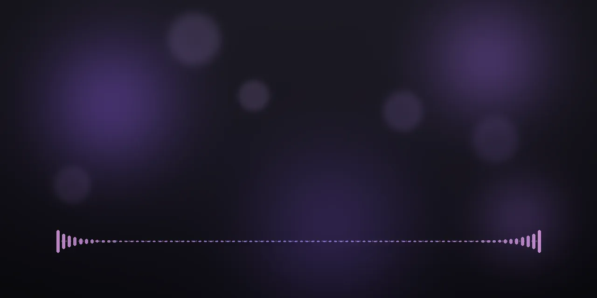
Hero clip: generated background and synthetic audio.
What you get
Built for one job: a clean overlay
- ProRes 4444 with real alphaA MOV with a transparent background, ready for a track above your footage.
- 10 audio-reactive layoutsScroll, Center-out, Pulse, Flow, Ripple, Neon, Reflection, Peak hold, Orbit and Voice line, in 4 styles: Bars, Line, Area and Dots.
- 18 color themesSolid or gradient fill, custom colors, and 3 presets: Calm, Balanced and Energetic.
- Real audio analysisThe audio is analyzed every 5 ms. A 48-band spectrum from 45 Hz to 10 kHz drives Neon, Reflection, Peak hold and Voice line.
- Live previewSynchronized audio playback, scrubbing, drag and drop, and remembered settings. Export is cancelable and never damages an existing file.
- Fast on long audioA one-hour WAV was analyzed in about 6 seconds on an Apple Silicon Mac.
- Runs locally; no uploadNo account, no telemetry, no web requests of its own. Fonts are bundled.
- App and command lineUse the desktop window or the
rubato-waveformcommand, with custom width, height and frame rate.
Layouts
Ten layouts, one transparent background
Each clip below is a real export from the app, driven by synthetic audio. The checkerboard shows the transparency.
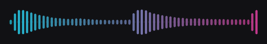
Scroll 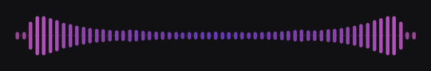
Center-out 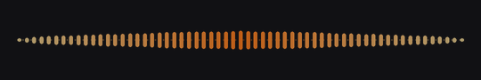
Pulse 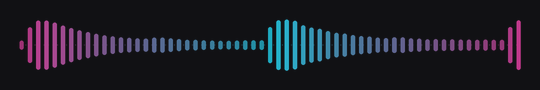
Flow 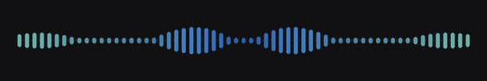
Ripple 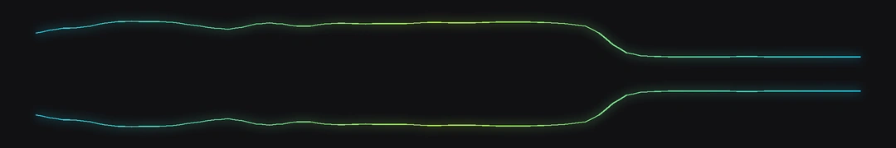
Neon 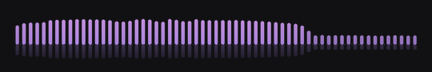
Reflection 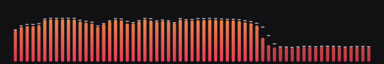
Peak hold 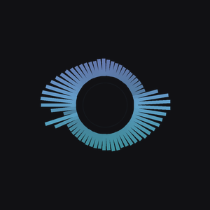
Orbit 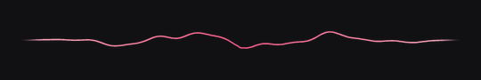
Voice line
Export sizes: 1080×180, 1920×240, 3840×360 and 1080×1080 at 30 fps. Orbit needs a square frame, and the app switches to it automatically.
The app
Quiet interface, loud preview
Controls for sensitivity, contrast, smoothing, time window, density, height and opacity sit beside a live preview.
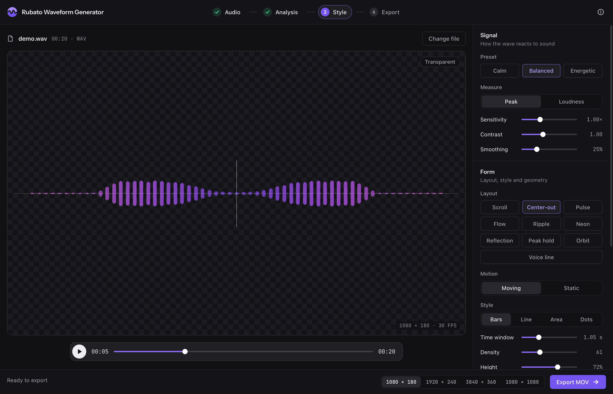
How it works
Three steps
Add audio
Drop in WAV, MP3, M4A, FLAC and more, or the audio track of an MP4, MOV, MKV or WebM video.
Shape the waveform
Choose a layout, style, color theme and preset, then tune it against the live preview.
Export a MOV
Render ProRes 4444 with alpha and place the file on a track above your footage.
Platforms and editors
What has been tested, and what has not
Platforms
macOS 14 or newer, Apple Silicon
Tested by the authorBuilds are ad-hoc signed and not notarized, so macOS refuses to open a downloaded copy at first. Try to open it, then go to System Settings > Privacy & Security > Open Anyway.
Windows 10/11 x64
Built by CI, not yet testedUnsigned, so SmartScreen may warn: More info > Run anyway. Needs the WebView2 runtime, which is included in Windows 11.
Linux
From source only, not tested in a windowThe command line and tests run in CI. The native window needs the GTK or Qt backend of pywebview; see its installation guide.
Editors
DaVinci Resolve
VerifiedIt is the author's regular workflow.
Premiere Pro, Final Cut Pro, After Effects and others
Not tested by the authorThese editors can generally read ProRes 4444 with alpha, so they are expected to work. Reports are welcome in the issue tracker.
FAQ
Questions
How do I add an audio waveform to a video?
Export the waveform from Rubato Waveform Generator as a MOV, then place that file on a track above your footage in your editor. Because the background is transparent, the video underneath shows through.
From a terminal: rubato-waveform input.wav output.mov
How do I make a waveform with a transparent background?
Every export is ProRes 4444 with an alpha channel in a MOV, so transparency is the default. The alpha is premultiplied. If edges look wrong in your editor, make sure the clip's alpha is interpreted as premultiplied.
Is it free?
Yes. It is open source under the Apache-2.0 license, with no account and no paid tier.
Does it upload my audio?
No. Analysis, preview and export all run on your computer. There is no account, no telemetry, and the app makes no web requests on its own; the app's interface can only talk to its own local server.
Why does it need FFmpeg?
Exports are encoded with the prores_ks encoder from FFmpeg. FFmpeg is installed separately because it is not bundled, for licensing reasons. The app finds it automatically and shows install commands when it is missing.
macOS: brew install ffmpeg
Windows: winget install Gyan.FFmpeg
Debian or Ubuntu: sudo apt install ffmpeg
Fedora: enable RPM Fusion, then sudo dnf install ffmpeg (stock ffmpeg-free may lack prores_ks)